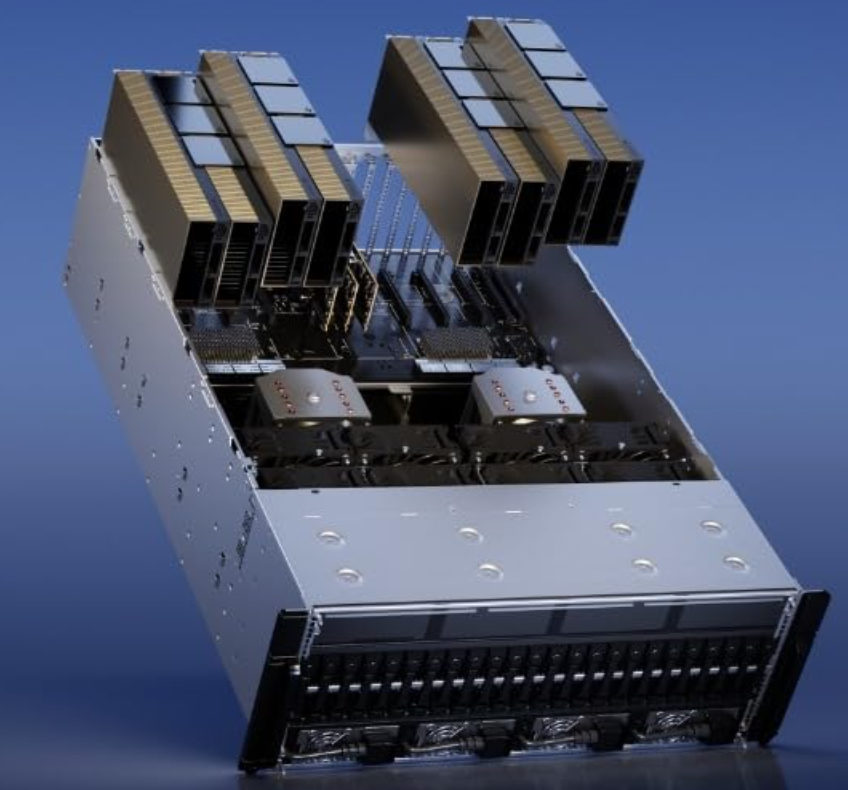
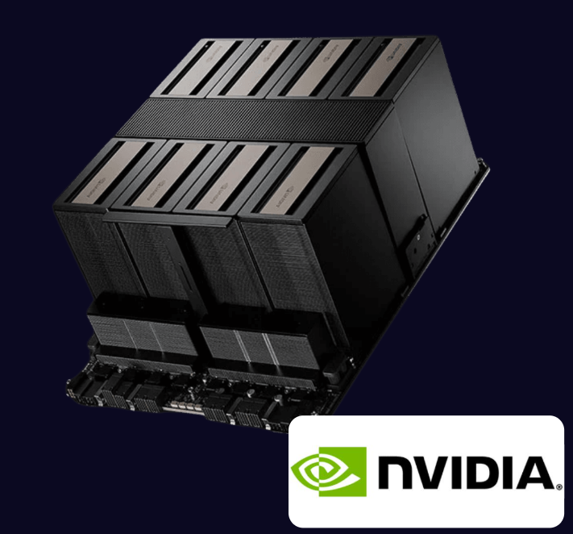
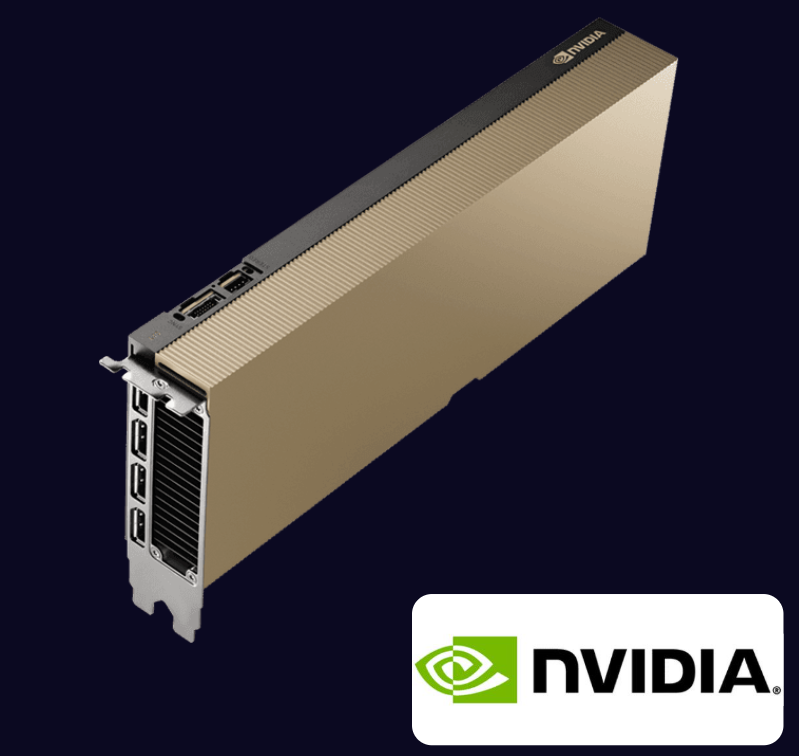

Project Overview
This repository provides a complete, production-ready guide for provisioning NVIDIA GPU servers. It covers BIOS & hardware validation, OS installation, NVIDIA driver and CUDA setup, GPU validation, and diagnostics for AI and HPC workloads.
Documentation Sections
Supported NVIDIA GPUs

NVIDIA H100
Hopper architecture for LLM training, HPC, and AI research.

NVIDIA H200
High-memory Hopper GPU for large-scale AI workloads.

NVIDIA B200
Blackwell architecture for next-generation AI factories.

NVIDIA L40S
Enterprise inference, visualization, and VDI workloads.
Validation Commands
nvidia-sminvidia-smi -Lnvidia-smi topo -mnvcc --versionlspci | grep -i nvidia
Diagnostics & Logs
dmesg | grep nvidianvidia-bug-report.sh- Thermal, power & driver health analysis